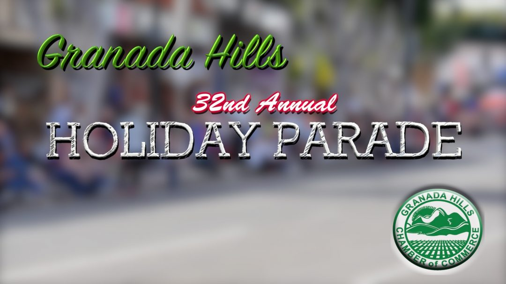

Granada Hills Holiday Parade
The Granada Hills Holiday Parade Route is 1.8 miles long and is the largest participant and spectator community parade in the San Fernando Valley. Annual parade participation is over 3000 youth participants including marching bands, drill teams civic groups, equestrian groups, and now a robotics team. By participating in the parade, the team is given a platform to spread the mission of Bishop Alemany High School, the RoboWarriors and FIRST Robotics.